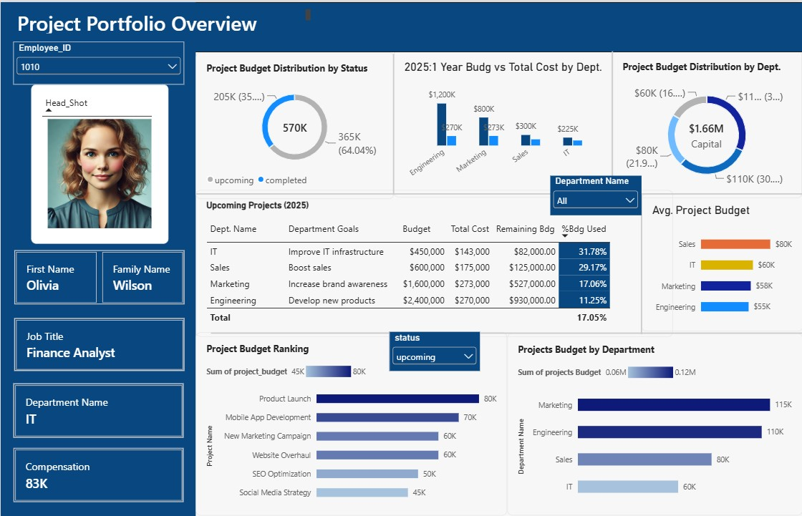

Dashboard
Visualización de la salud financiera de un portafolio de proyectos.

Analista de Negocios con conocimiento en SQL, Python, y Power BI
@Alcira Bruzual
Visualización de la salud financiera de un portafolio de proyectos.

Exploración de varias técnicas de limpieza de datos, usando MySQL, partiendo de un set de datos sin depurar y transformándolo en un formato útil para el análisis.

Análisis exploratorio de datos (EDA) realizado en MySQL para investigar las tendencias globales de despidos, durante los años 2020-2023.

Sistema integral de gobernanza que combina auditoría en Python, análisis de causas raíz con IA Generativa (Gemini API) y monitoreo en Power BI.